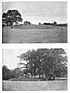
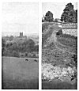

Sacred Texts Legends & Sagas England Index Previous Next
EARLY BRITISH TRACKWAYS.
MOATS. MOUNDS, CAMPS AND SITES.
INTRODUCTION.
I have read of a lad who, idly probing a hill-side rabbit hole, saw a gleam of gold, then more, and in short had found a royal treasury. And he could not show all to those interested, but only samples, and he made mistakes in describing the dates and workmanship of the coins, vessels and jewels. But the treasure was there all the same.
I knew nothing on June 30th last of what I now communicate, and had no theories. A visit to Blackwardine led me to note on the map a straight line starting from Croft Ambury, lying on parts of Croft Lane past the Broad, over hill points, through Blackwardine, over Risbury Camp, and through the high ground at Stretton Grandison, where I surmise a Roman station. I followed up the clue of sighting from hill top, unhampered by other theories, found it yielding astounding results in all districts, the straight lines to my amazement passing over and over again through the same class of objects, which I soon found to be (or to have been) practical sighting points.
For the sake of clearness I will give an outline of the whole method before furnishing proofs and examples.
It is necessary first to clear the mind of present ideas of roads from town to town, or with enclosed hedges, also of any assumption that orderly road planning was introduced by the Romans, and that my paper is to explain the Roman roads.
Presume a primitive people, with few or no enclosures, wanting a few necessities (as salt, flint flakes, and, later on, metals) only to be had from a distance. The shortest way to such a distant point was a straight line, the human way of attaining a straight line is by sighting, and accordingly all these early trackways were straight, and laid out in much the same way that a marksman gets the back and fore sights of his rifle in line with the target.
During a long period, the limits of which remain to be discovered, but apparently from the Neolithic (later flint) age on past the Roman occupation into a period of decay, all trackways were in straight lines marked out by experts on a sighting system.
Such sighting lines were (in earlier examples) from natural mountain peak to mountain peak, usually not less than 1,000 ft., in this district, probably lower heights in flat districts, such points being terminals.
Such a sighting line (or ley) would be useless unless some further marking points on the lower ground between were made. Therefore secondary sighting points were made, easily to be seen by the ordinary user standing at the preceding sighting point, all being planned on one straight line. These secondary, and artificial, sighting points still remain in many cases, either as originally made, or modified to other uses, and a large number are marked on maps, and are the basis of my discovery.
They were constructed either of earth, water or stone, trees being also planted on the line. Sacred wells were sometimes terminals in the line, and sometimes included as secondary points.
Between the sighting points the trackway ran straight, except in cases of physical impossibility, but did not of necessity go as far as the primary hill tops.
Earth sighting points were chiefly on higher ground, and now bear the name of tump, tumulus, mound, twt, castle, bury, cairn, garn, tomen, low, barrow, knoll, knap, moat and camp. Another form of earth sighting point was in the form of a notch or cutting in a bank or mountain ridge which had to be crossed by the sighting line.
Water sighting points seem to have evolved from the excavations made for the tumps or moats. Almost all are on low ground, to form a point or ring of reflection from higher ground, and are now known as moats and ponds.
Stone sighting or marking points were natural (not dressed) blocks.
Sighting lines were (in earliest examples) up to 50 or 60 miles in length, later on rather shorter, down to a few miles.
Sighting points were used for commerce and for assemblies of the people.

Click to enlarge
PLATE III. MOUND AND MOAT.
{kind=link}
|
1. Houghton Mound. 2. Lemore Moat. |

Click to enlarge
PLATE IV. THREE POINT PROOFS.
{kind=link}
|
1. Sighting Pond, Hereford Cathedral, Pen-y-Beacon. 2. Ford at Llanvihangel Mill, Road, Tre-Fedw Mound (See Plate II.) |
When troublesome times came and stronger defences wanted, the groups of two or three sighting tumps which came near together (especially on the top of a hill) often had defensive earthworks added to make a fortified enclosed camp.
These trackways of successive ages grew so thick on the ground as to vie in number with present day roads and by-ways.
All forms of sighting points became objects of interest, superstition, and genuine veneration, and as such were utilized on the introduction of Christianity.
Practically all ancient churches are on the site of these sighting points (tumps or stones), usually at a cross of tracks, and there is evidence that in some cases the churchyard cross is on the exact spot of the ancient sighting or marking stone.
In time, homesteads clustered round the sighting points, especially the ponds.
The moats and tumps were often adopted in after ages as sites for the defensive houses or castles of wealthy owners.
Hundreds of place names give support to these propositions.
![g'.г.Ail maiden ©uмонетი: ℞ubli© ძ'ommAin 🖼 ImageI by 'Art'hur R_AckHÅm' & All inclusive names to my Roots && me, me I.B.M.l. ასლაჼ კლდიაშვილი, А©ЛАჼ ©КЛიДиÅWвიЛи [1922], @novadays ი.ბ. АйбоЛит [Aibolem МЕЛОДИЯR₾ი მო'სი'კვÅჼ]](https://barionleg.github.io/db-sacred-texts.li/neu/ba_geo_f.png) |